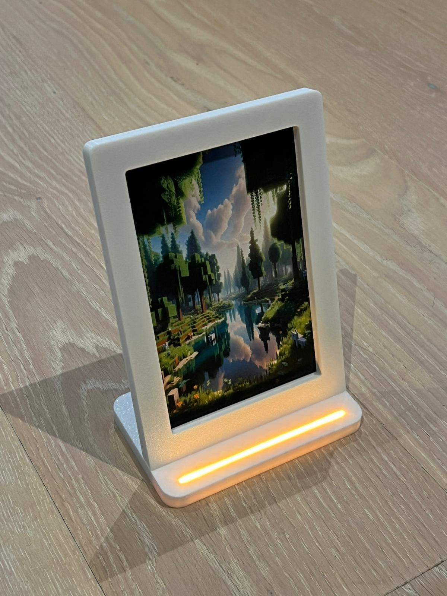
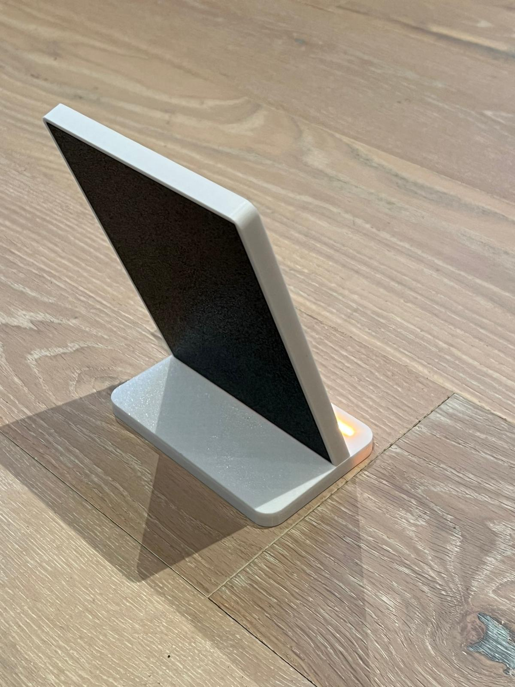
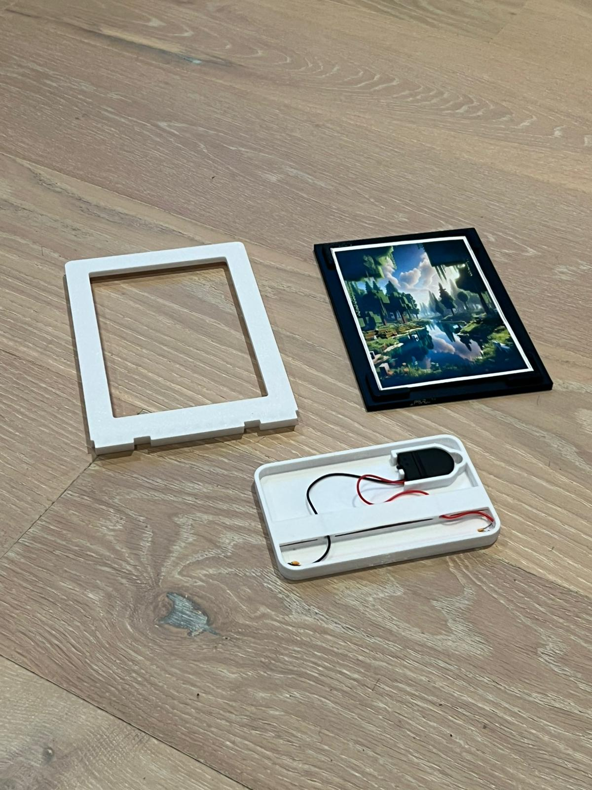
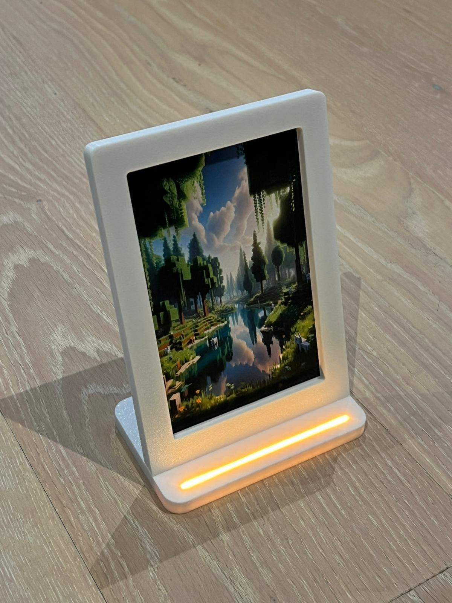
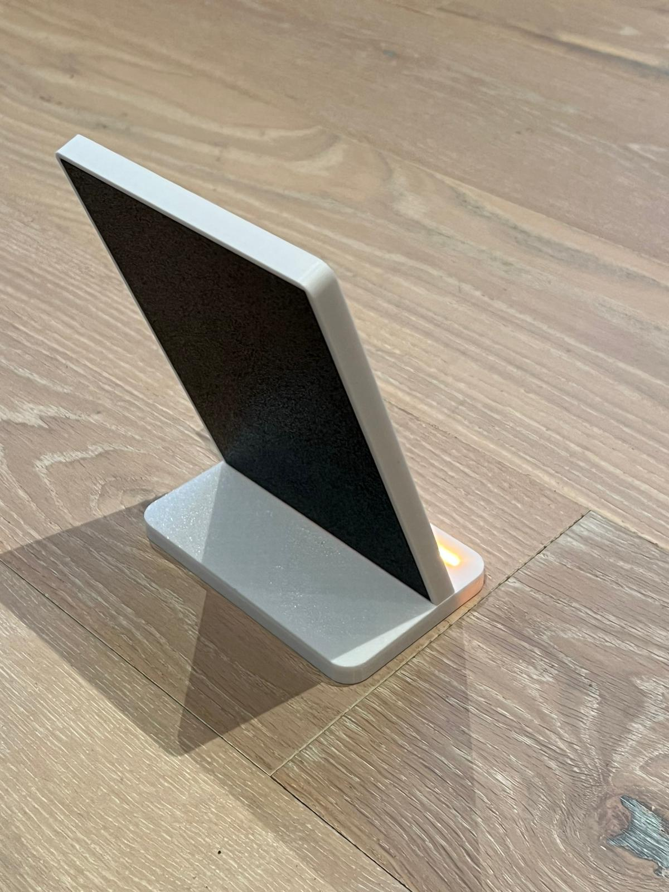
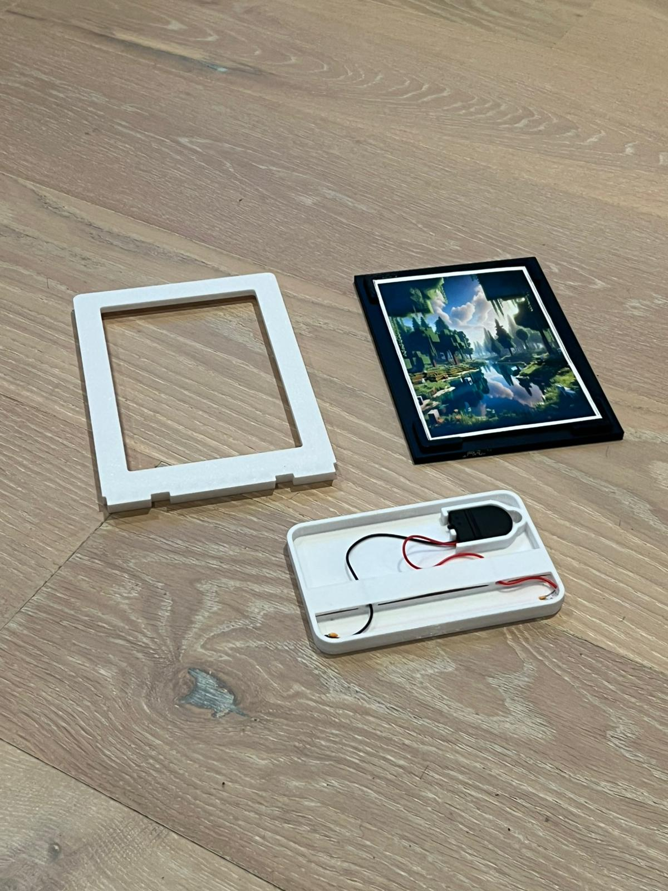
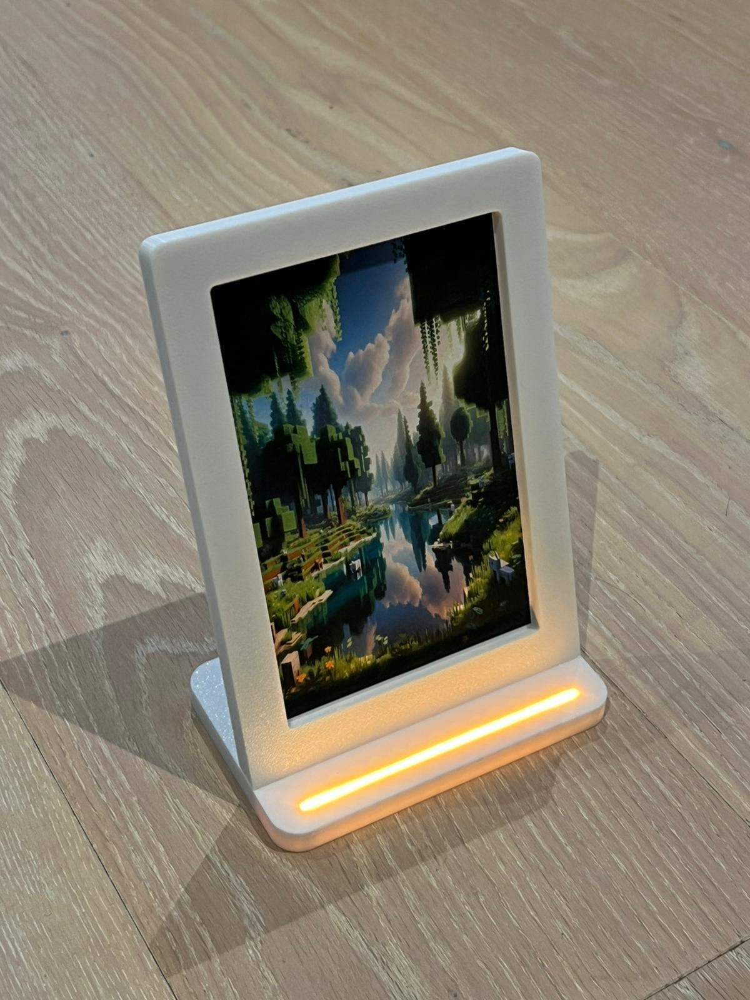
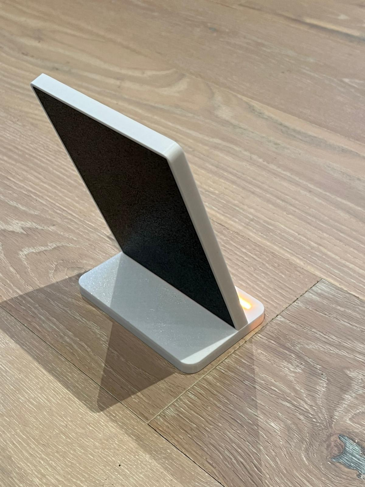
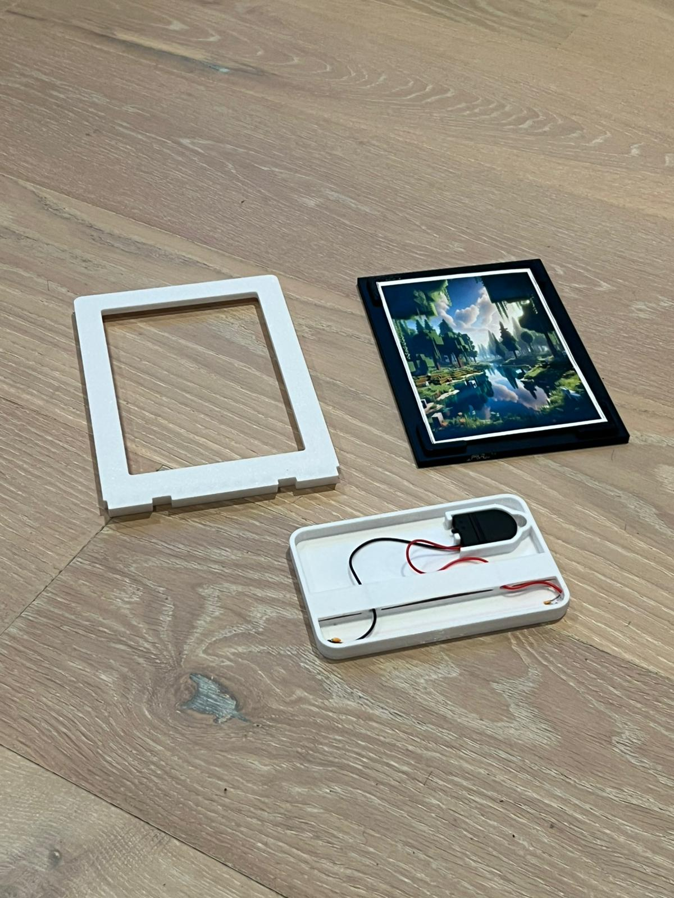

3D Model (rotate me)
Photo Gallery
 





Downloads
I tre pezzi che compongono il portafoto:
Cornice portafoto stampata in 3D, composta da tre parti (cornice, retro e base) con spazio interno per una strip LED. Progettata in SolidWorks e pensata per essere facile da stampare e assemblare.



I tre pezzi che compongono il portafoto: